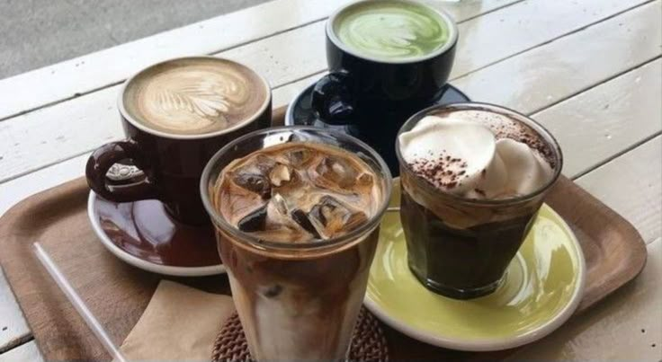
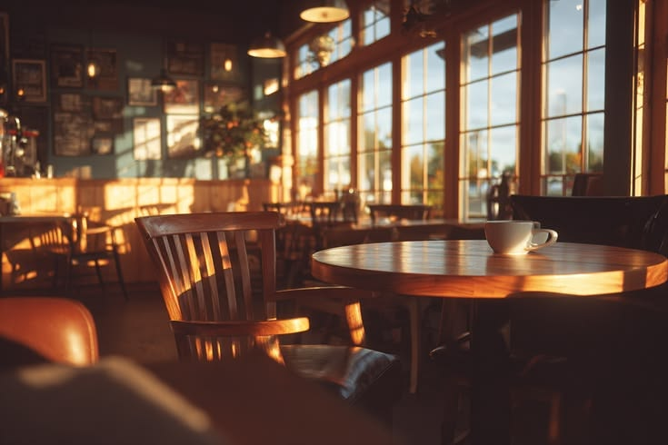

Cerita UMKM Pekalongan
Tentang Kopi Zaramaraz
Kopi Zaramaraz adalah ruang tenang di tengah hiruk-pikuk kota yang memadukan keindahan desain minimalis modern dengan sentuhan interior yang hangat. Kami menyajikan kopi pilihan yang diseduh dengan penuh presisi, berdampingan dengan aneka hidangan segar setiap harinya. Setiap sudut didesain secara estetis dan fotogenik, menjadikannya tempat sempurna untuk menikmati waktu sendiri, mencari inspirasi baru, atau sekadar berbagi cerita. Temukan kenyamanan dalam setiap sesapan hanya di Kopi Zaramaraz.

